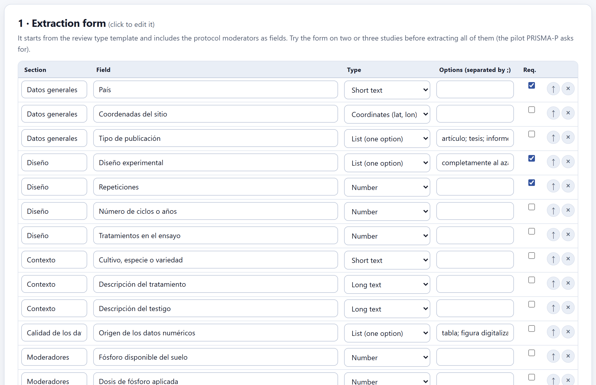
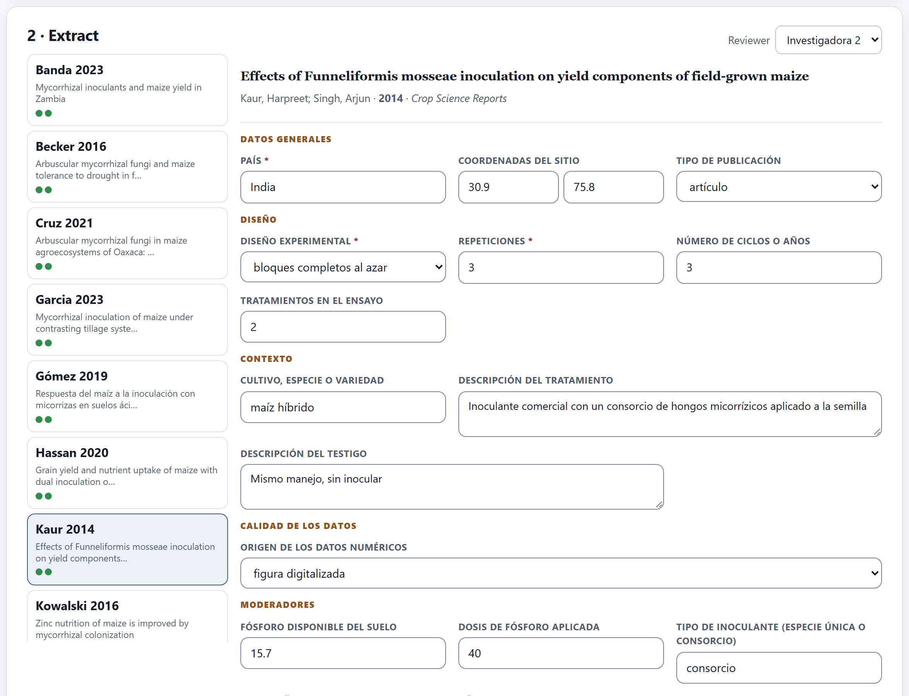
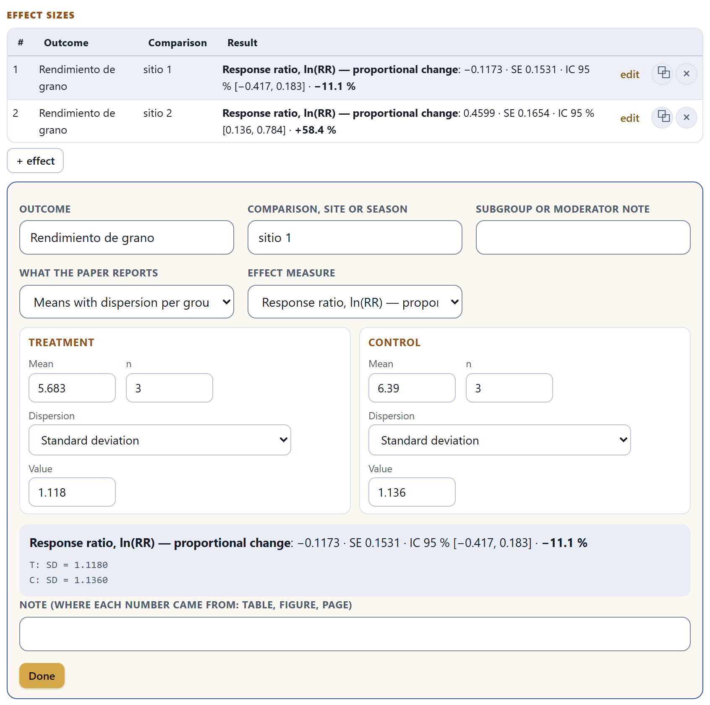
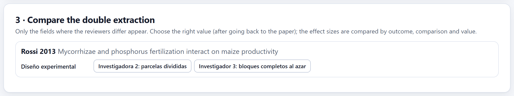
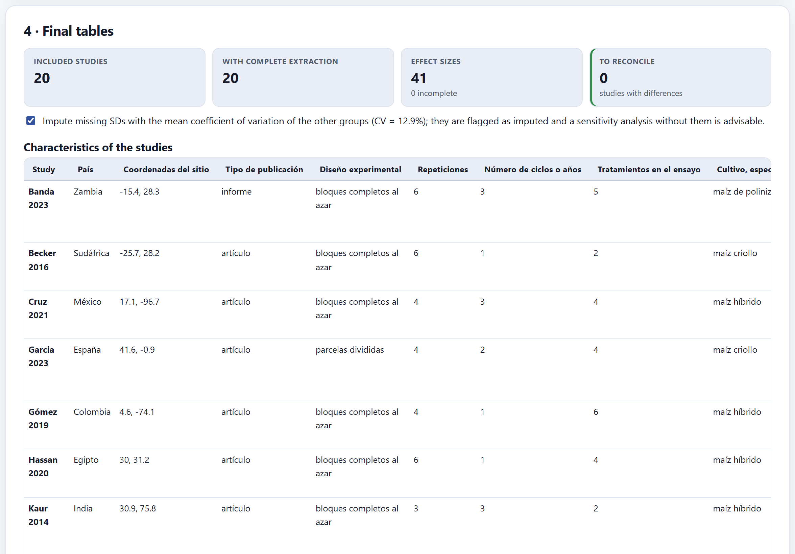

A form that you design, filled in per study and per reviewer; a calculator that turns what the paper reports—means with SD, SE, CI or CV; the ANOVA LSD, SED or CV; medians; t, F, p or counts—into the effect size with its variance; the comparison of the double extraction; and the final tables that the synthesis and the manuscript will use.
The first card is collapsed: 1 · Extraction form (click to edit it). The form starts from a template for the review type and adds as fields the moderators you declared in the protocol, so that they are extracted from the start.

| Field type | What for |
|---|---|
| Short text · Long text | Country, cultivar; description of the treatment and of the control. |
| Number | Replicates, years, soil phosphorus, rate. Numeric fields can be moderators of a meta-regression. |
| List (one option) · List (several options) | Experimental design, publication type, data source; options are separated by semicolons. Lists can be subgroup moderators. |
| Yes / no | A condition that is met or not. |
| Coordinates (lat, lon) | The site of the experiment, in decimal degrees. |
Each field has its section, can be required (marked with * when extracting) and is reordered with ↑. + field adds one; Back to the template discards the changes. Test the form on two or three studies before extracting all of them: it is the pilot that PRISMA-P asks for, and changing a field later forces you to go back to every paper.

On the left are the included studies from Block 5, each with author and year; linked reports appear together as a single study. When you choose one, the form is filled in for the active Reviewer, at the top right. Everything is saved as you type.
The note field of each effect asks where each number came from: table, figure, page. When another reviewer, a referee or you yourself six months from now want to check a value, that note saves rereading the whole paper. If the number was digitized from a figure, say so: it is less precise than one from a table.
At the foot of the study is the table of effect sizes: one row per comparison—a site, a season, a rate—with its outcome, its result and the buttons to edit, duplicate or remove it. + effect opens the editor.

Each row has the outcome (those of the protocol), the comparison (site, season or rate), an optional subgroup or moderator note, what the paper reports and the effect measure. Depending on what is reported, the calculator asks for different data:
| What the paper reports | What it asks for and how it converts |
|---|---|
| Means with dispersion per group | Mean and n of each group, with the dispersion as standard deviation, variance, standard error (SD = SE·√n), confidence interval of the mean (SD = √n·(U − L)/(2·t), with t if n < 60) or coefficient of variation (SD = CV·mean/100). |
| Means with the ANOVA LSD, SED, SEM or CV | The pooled SD of the experiment: from the LSD (with the error degrees of freedom, or deduced from the design—completely randomized, blocks or Latin square—and its α), from the SED (SD = SED·√(r/2)), the SEM (SD = SEM·√r), the CV of the experiment or the error mean square (SD = √MSE). |
| Medians with quartiles or range | Estimates the mean and SD (Wan et al. 2014). |
| Two-group t statistic, F with 1 df, two-sided p value, CI of the mean difference | The standardized mean difference (Hedges’ g), with the n of each group; for F and p, you supply the sign. |
| Counts (2×2 table) | Risk ratio, odds ratio or risk difference. |
| Correlation | Fisher’s z, with the n. |
| Effect already computed | The effect with its standard error or variance, as the paper gives it. |
The response ratio (Hedges et al. 1999) measures the proportional change of the treatment relative to the control, so it compares well across sites with very different yields. It needs positive means of a variable with a natural zero. Its variance grows when replicates are few or the experiment is variable: that is why small trials weigh less in Block 8.
| If the study reports several sites, seasons or rates separately | then one row for each: the multilevel model of Block 8 knows they come from the same study. |
| If it also reports the average of all of them | then do not extract it as another row: it would count the same data twice. |
| If it has several treatments against a single control | then one row per treatment, and note it: they share the control, and their effects are not independent. |
| If there is only a figure | then digitize the means and the bars, and mark the source as “digitized figure.” |
| If there is no measure of dispersion at all | then write to the authors; if they do not reply, use the imputation of Section 6.4. |
Many agronomic experiments publish means without their dispersion. The checkbox of the final tables card, Impute missing SDs with the mean coefficient of variation of the other groups, estimates them with the mean CV of the studies that do report it (Lajeunesse 2013) and shows that CV—in the example, 12.9%. The imputed rows are flagged as such, and Block 8 always runs a sensitivity analysis without them.
Declare it in the protocol (sensitivity analysis “exclude studies with imputed dispersion”), report it in the methods and check whether the result changes without the imputed rows. If it changes a lot, the result depends on data that do not exist: say so.

When the protocol calls for duplicate extraction, each reviewer fills in their own form without seeing the other’s. This card shows only the fields where they differ, study by study, with each reviewer’s value as a button: go back to the paper and choose the correct one. Effect sizes are compared by outcome, comparison and value. While a field has differences, the characteristics table marks it as pending.
The two reviewers of the example differed on three values out of 20 studies: the replicates of Kaur 2014 (3 or 4), the data source of Oliveira 2018 (table or text) and the design of Rossi 2013 (split plots or blocks). All three were reconciled by going back to the papers.

At the top, four figures: included studies, studies with complete extraction, effect sizes (and how many are incomplete) and studies to reconcile. Below, two tables with the final values—the agreed or the reconciled ones:
{{table:characteristics}} in Block 9).⤓ Effects table (.csv) and ⤓ Characteristics (.csv) download both: they are the supplementary data that more and more journals ask for, and the input for anyone who wants to repeat the analysis with other software.
The calculator says what is missing for each input type: “The response ratio needs positive means and both n.”, “Data are missing to compute the effect.” The cards warn you if there are no included studies yet (Block 5), if there are fields to reconcile and how many effect rows are incomplete.